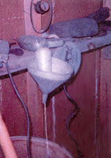

Reinforce the cardboard tube from a paper towel roll by trimming it with contact paper - now it's an excellent holder for appliance extension cords.
Sofas and chairs often slip and slide on tile or wood floors, causing damage to walls or wallpaper. To prevent this, screw a rubber-tipped metal doorstop into each end of the back of the frame of your chair or sofa. These bumpers will keep walls free from mars and will prevent damage to upholstery caused by rubbing against plaster walls.
Keep balls of string handy in a funnel tacked to the wall of your utility room. The ball will turn easily in the funnel as you pull on the string. A large can with a hole in the bottom will do the job just as well.
This is an odd way to find the studs behind your wallboard, but it works: Run an old electric razor along the wall until the sound noticeably changes. When it does, you've reached a stud.
Thomas LaMance
Prewitt, New Mexico
|
 THOMAS LAMANCE Keep your string safe and easy to use with this funnel string dispenser. |
|
|